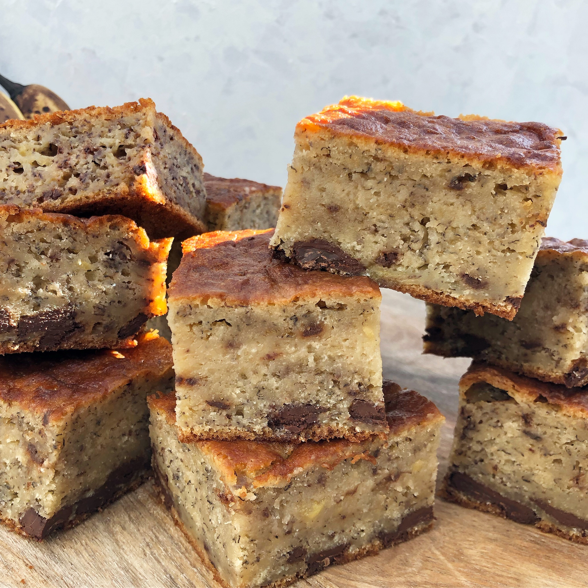

Her kan du se min kageopskrift!
Her er min opskrift på banan- og chokoladekage

Ingredienser:
- 2 æg
- 120 g sukker
- 2 bananer
- 100 g margarine
- 100 g mandler
- 100 g mørk chokolade 44%
- 300 g hvedemel
- 3 tsk bagepulver
- 1 dl sødmælk
Fremgangsmåde:
- Rør blødt fedtstof og sukker godt sammen
- Rør æggene i et ad gangen. Mos bananerne og rør dem i
- Hak mandlerne og chokolade, og bland dem med bagepulver og mel, nu vendes det forsigtigt i dejen, skiftevis
med mælk
- Kom dejen i en velsmurt springform ca. 24 cm. i diameter
- Bag kagen i den nederste halvdel af ovnen ved 175 grader C alm. ovn ca. 45 minutter